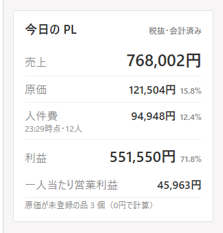
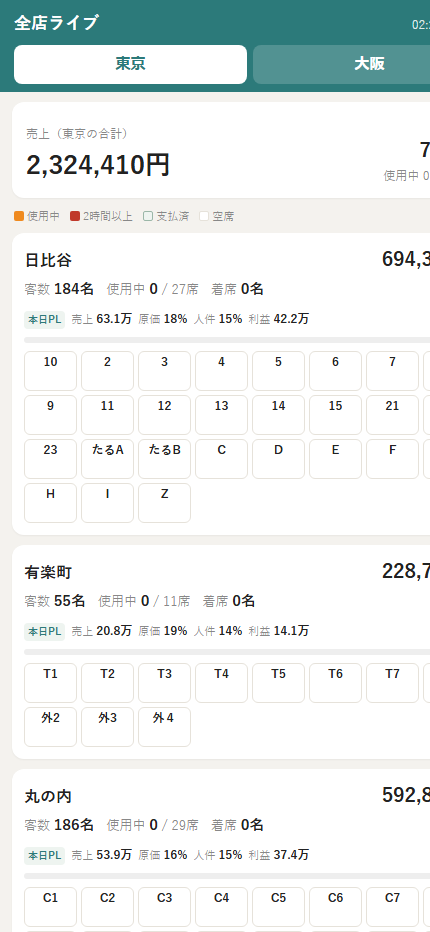
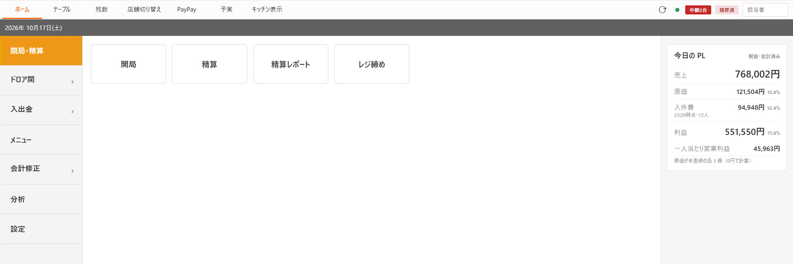
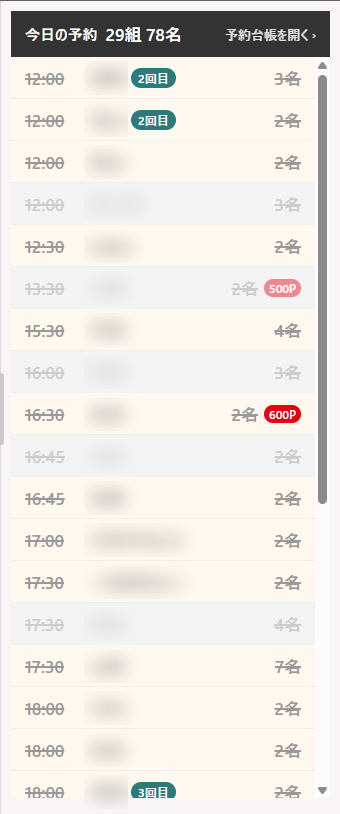
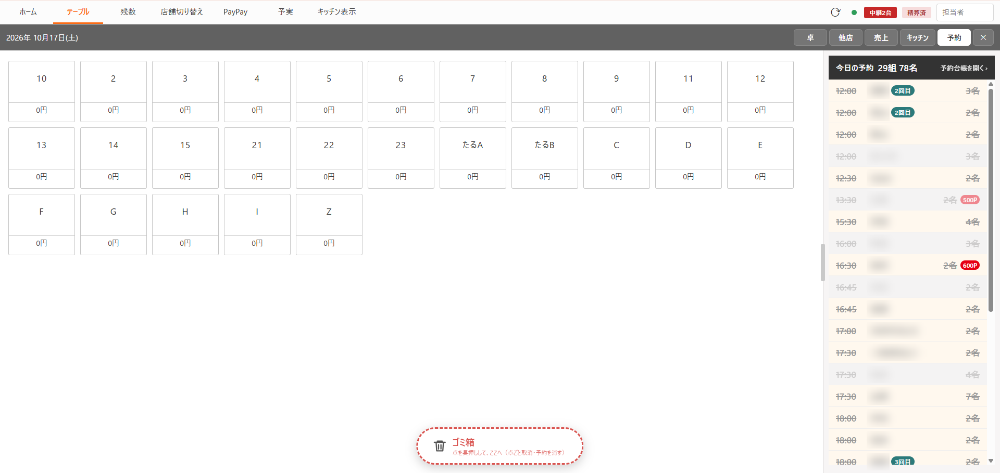
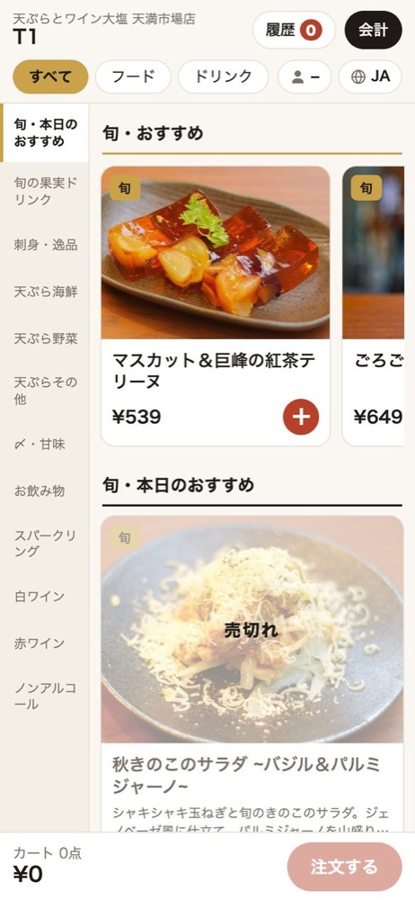
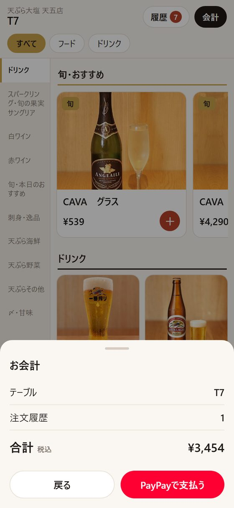
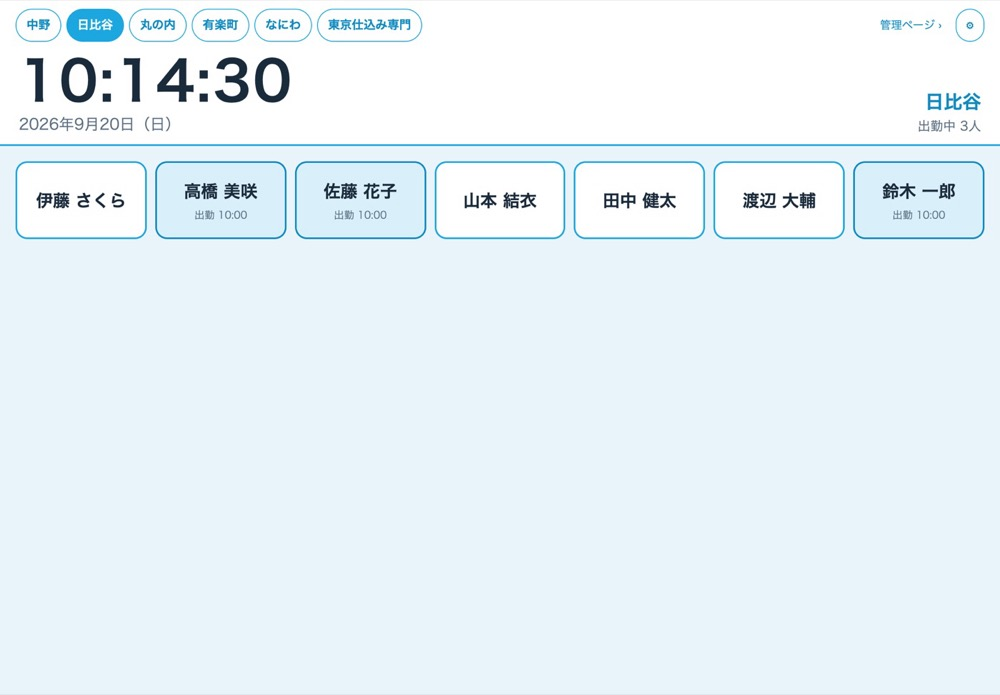
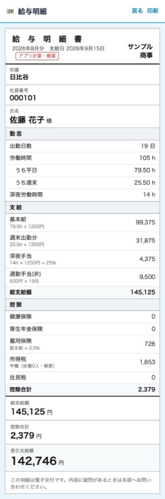
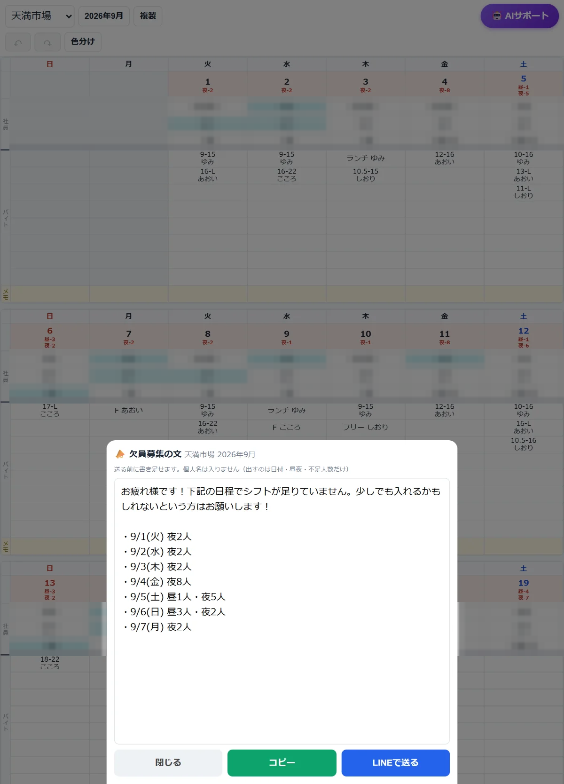

AI事業｜飲食店経営AI
注文、会計、予約、打刻、給与、シフト、経理。
店のことはKANAIが回します。
人は、人にしかできないことを。
天ぷらとワイン大塩・たこ焼き酒場なにわなど、
大阪・東京のアゲルの店舗を毎日回している仕組みが AI KANAI です。
デモ用ではなく、自社の店で実際に動いているものを
飲食店のみなさまにお届けします。
お客様と、スタッフの手元に。
会計の道具ではありません。注文・支払い・原価に、AI KANAIのタイムカードから取った人件費が同じ場所に集まるので、営業中にその日の利益が出ます。人件費は開局中10分ごとに自動で取り直し、店の合計だけを出します。誰の時給も、どの画面にも出ません。
同じ数字を、スマホの全店ライブでも。スタッフ全員が、売上ではなく利益を見て動けます。
0円利用料・1店あたり月（決済手数料・機器は別）


レジの「今日のPL」と、スマホの全店ライブ（本番の画面）

レジのホーム。開局・精算・レジ締めの横に、今日のPL（本番の画面）
自社のネット予約も、グルメサイトからの予約も、電話も。どこから入った予約も全店ぶん1つの台帳にまとめ、お客様は電話番号で1人に。レジの予約欄に、名字の横に「3回目」と出ます。押すと、いつ・どの店に来られたかが分かります。
6,000円1店あたり月（自社ネット予約・各媒体の取り込み・顧客台帳）

レジの予約欄。2回目・3回目、500P・600P（本番の画面・お名前は伏せています）

席を見ながら、今日の予約が目に入る位置に（本番の画面）
席のQRから注文して、そのまま自分のスマホで支払い。一番上には旬の一品、言葉は5ヶ国語に自動で翻訳。注文はそのまま厨房の画面とレジの会計に流れるので、伝票も、暗算も、レジの列もなくなります。
0円利用料・1店あたり月（決済手数料は各決済会社の料金）


お客様のスマホ。注文と、席でのお会計
必要になったぶんだけ、足していく。



※ 金額は税抜。タイムカード・給与明細の画面はサンプルデータです
全店の今日の利益（売上・原価・人件費）がスマホに出る。レジ締め・カード・PayPay・銀行の突き合わせは毎日KANAIがやり、ずれた日だけ知らせが来る。数字を集めて回る仕事がなくなる。
シフトは希望がLINEで集まって組まれ、足りない日は募集文まで出る。打刻の押し忘れ・締めの差異は朝のLINEにタスクで届く。明細は公開を押すだけ。
打刻は名前をタップ。給与明細はLINEに届き、自分で出勤実績と突き合わせられる。レジの予約欄で、入ったばかりでも常連が分かる。有給や質問はLINEのKANAIに聞く。